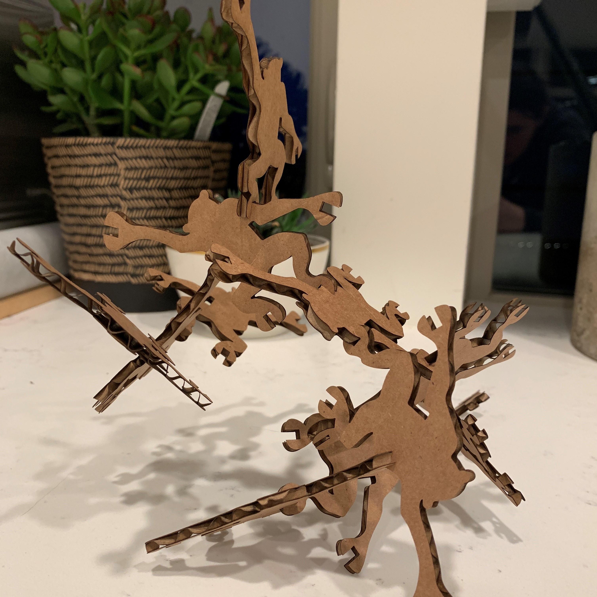

Assignment 2: Parameterized Laser-Cut Monkeys

What's more fun than a barrel of monkeys? A parameterized, interconnected, laser-cut, press fit construction kit of monkeys!
Here's the source file.
I started with the Illustrator file I created in Assignment 1 - the outline of the monkey without any of the notches cut into the hands and feet. I opened that Illustrator file directly in Rhino - and the outline appeared withiout me having to do any conversions.
I started by scaling up the monkey outline to around 100mm tall - I didn't want the pieces to end up too tiny. Then, I needed to parameterize the notches in the hands and feet using Grasshopper.

Finally, I had my monkeys - and they fit together perfectly!
Thanks to Brooks Robinson for showing me how to insert a link into this page and Tanya Wang for helping me get up to speed on the laser cutter!